Chapter 05 · 细胞与基本组织
软骨与骨
Cartilage and Bone · 12 小节 · 20 张切片 · 11 张电镜 · 本地概览 20 张
本章导语
软骨与骨同属支持性结缔组织，共同特点是细胞外基质坚固而细胞成分稀少。本章先比较三类软骨的基质成分与细胞排列，再进入骨组织，从骨松质与骨密质两种结构形式认识骨板、骨单位和骨陷窝。后半部分讨论膜内成骨与软骨内成骨两种发生途径，最后以牙发生作为上皮与间充质相互作用的实例。学习时把基质的染色特点当作识别入口，把骨板排列当作判读骨架。
复习重点
- 三类软骨在基质成分与纤维可见性上的差别
- 软骨陷窝、同源细胞群与软骨膜的辨认
- 骨单位、间骨板与穿通管的结构关系
- 骨松质与骨密质在切面上的表现差异
- 膜内成骨与软骨内成骨的过程与部位
易混淆对比
- 透明软骨 vs 纤维软骨：后者基质中胶原纤维束成层可见，软骨细胞成行排列。
- 骨松质 vs 骨密质：前者由骨小梁连成网架并有骨髓腔，后者以同心圆骨单位紧密排列。
- 膜内成骨 vs 软骨内成骨：前者直接在间充质中形成骨小梁，后者先形成软骨雏形再被骨取代。
待核验译名：肖尔染色（Schmorl stain）中文无统一译名，术语表按惯例沿用 Schmorl 染色并标为待核验（Schmorl stain）
阅读提示：本页中文要点为自编复习笔记，不是原站正文的翻译；标本图像为经作者书面许可保存的中分辨率概览，每张卡片保留 © 署名与原页面链接，“原站本章/原站切片”可查看高倍与结构标注。本站为 Histology Guide 的非官方中文学习改编版，未经其认可或背书。
软骨
CARTILAGE
- 软骨由软骨组织及其周围的软骨膜构成。
- 软骨细胞位于软骨陷窝内，周围基质称软骨囊。
- 软骨内无血管和神经，营养靠基质扩散供给。
- 软骨组织分为透明软骨、弹性软骨和纤维软骨三类。
低倍镜先找淡蓝紫色、均质的软骨基质区域
高倍镜再确认陷窝内的软骨细胞与周边软骨膜
透明软骨
Hyaline Cartilage
- 基质呈均质淡蓝紫色，胶原原纤维在光镜下不可见。
- 软骨细胞自表层向深部由扁圆逐渐变圆并聚成同源细胞群。
- 关节软骨表面光滑，不覆盖软骨膜。
- 气管软骨环属于透明软骨，外周有软骨膜环绕。
低倍镜先找均质蓝染的软骨块并确定其边界
高倍镜再确认软骨陷窝与同源细胞群
易混提示：基质中看不到纤维，不等于其中没有胶原原纤维。
相关标本 · 2
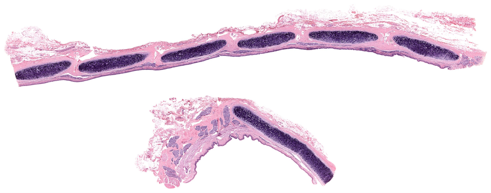
点击图片放大 · 本地概览
MH 136 Trachea
气管（透明软骨）
Hyaline Cartilage
H&E
本地概览
3071×1209
图像 © Histology Guide 及/或原始贡献者 · 非商业教育用途，经许可保存；原页面链接见下方
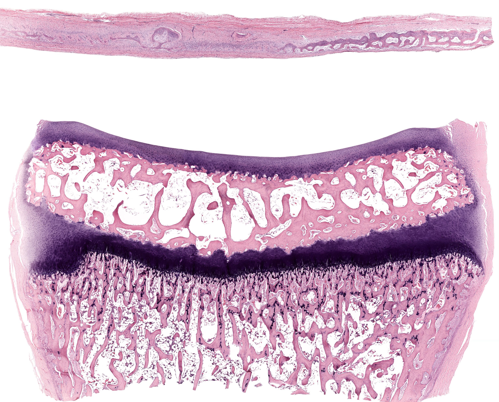
点击图片放大 · 本地概览
MH 046 Hyaline Articular Cartilage
关节透明软骨
H&E
本地概览
3060×2470
图像 © Histology Guide 及/或原始贡献者 · 非商业教育用途，经许可保存；原页面链接见下方
电镜照片 4 张（在线查看）
弹性软骨
Elastic Cartilage
- 基质内含大量弹性纤维，特殊染色下呈深色纤维网。
- 软骨细胞分布较均匀，陷窝轮廓清楚。
- 见于耳廓、会厌和喉部的小软骨。
- 弹性纤维使软骨兼具弹性与支撑能力。
低倍镜先找软骨基质中交织的深染纤维网
高倍镜再确认陷窝内细胞与纤维网的关系
相关标本 · 2

点击图片放大 · 本地概览
MH 038-039 Epiglottis
会厌（弹性软骨）
Elastic Cartilage
H&E/Verhoeff
本地概览
2819×1001
图像 © Histology Guide 及/或原始贡献者 · 非商业教育用途，经许可保存；原页面链接见下方
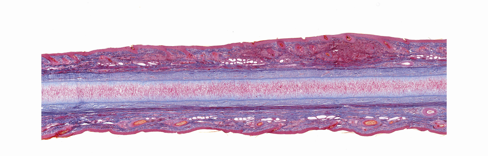
点击图片放大 · 本地概览
VH 040 Ear
耳廓（弹性软骨）
Elastic Cartilage
Masson's Trichrome/Aldehyde Fuchsin
本地概览
4687×1503
图像 © Histology Guide 及/或原始贡献者 · 非商业教育用途，经许可保存；原页面链接见下方
纤维软骨
Fibrocartilage
- 基质中含大量平行或交错的胶原纤维束。
- 软骨细胞常成行排列于纤维束之间。
- 见于椎间盘、耻骨联合和关节盘。
- 无明显软骨膜，抗压与抗牵拉能力均较强。
低倍镜先找纤维束密集而基质蓝染的软骨区域
高倍镜再确认成行排列的软骨细胞
相关标本 · 1
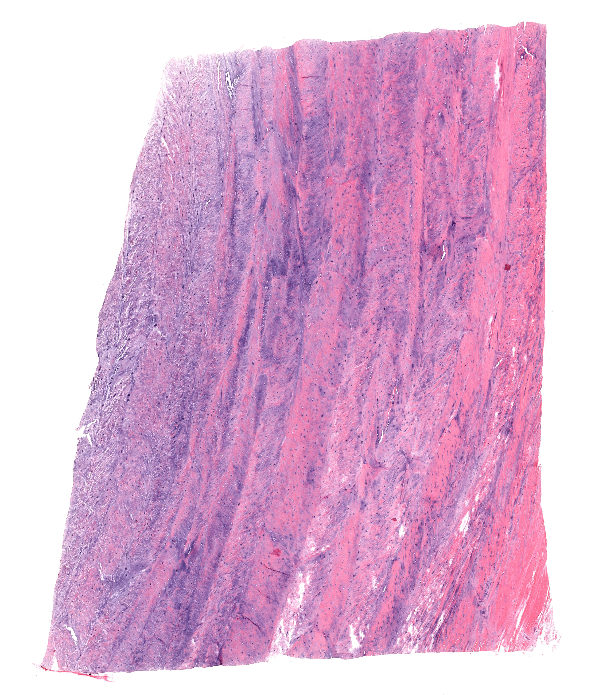
点击图片放大 · 本地概览
MH 040 Intervertebral Disc
椎间盘（纤维软骨）
Fibrocartilage Cartilage
H&E
本地概览
4607×5371
图像 © Histology Guide 及/或原始贡献者 · 非商业教育用途，经许可保存；原页面链接见下方
软骨发生
CARTILAGE DEVELOPMENT
- 间充质细胞聚集并分化为成软骨细胞，再形成软骨。
- 软骨以附加性生长和间质性生长两种方式增粗延长。
- 胚胎期软骨雏形为后续软骨内成骨提供模板。
- 软骨周边形成软骨膜，其内层细胞可分化为成软骨细胞。
低倍镜先找胚胎标本中聚集的未分化间充质细胞群
高倍镜再确认被软骨基质包绕的细胞区域
相关标本 · 1
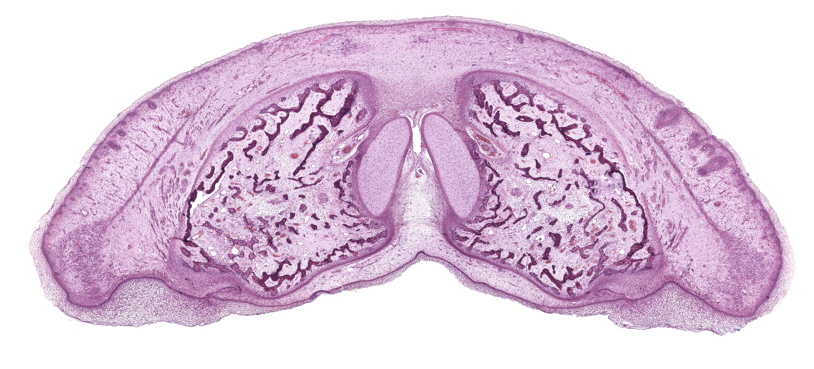
点击图片放大 · 本地概览
MH 020b Pig Snout Fetal
胎猪吻部（软骨发生）
Chondrogenesis
H&E
本地概览
4365×1983
图像 © Histology Guide 及/或原始贡献者 · 非商业教育用途，经许可保存；原页面链接见下方
骨组织
BONE
- 骨由骨组织、骨膜和骨髓构成，是坚硬的结缔组织。
- 骨基质含大量胶原纤维和钙盐，并排列成骨板。
- 骨细胞位于骨陷窝内，突起经骨小管彼此连通。
- 骨膜分内外两层，参与骨的生长与修复。
低倍镜先分清热染的骨基质与骨髓腔
高倍镜再确认骨陷窝与骨板的排列方向
相关标本 · 1
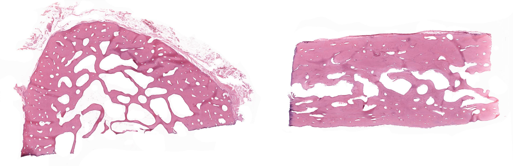
点击图片放大 · 本地概览
MH 043 Cancellous and Compact Bone
骨松质与骨密质
H&E
本地概览
3000×977
图像 © Histology Guide 及/或原始贡献者 · 非商业教育用途，经许可保存；原页面链接见下方
电镜照片 1 张（在线查看）
骨松质
Spongy Bone
- 骨小梁呈网状排列，方向与受力方向一致。
- 骨小梁之间为骨髓腔，内含红骨髓或黄骨髓。
- 骨小梁由平行骨板构成，表面覆以骨内膜。
- 椎骨、长骨骨骺和扁骨内部以骨松质为主。
低倍镜先找相互交织的红染骨小梁网
高倍镜再确认小梁之间的骨髓腔
相关标本 · 1
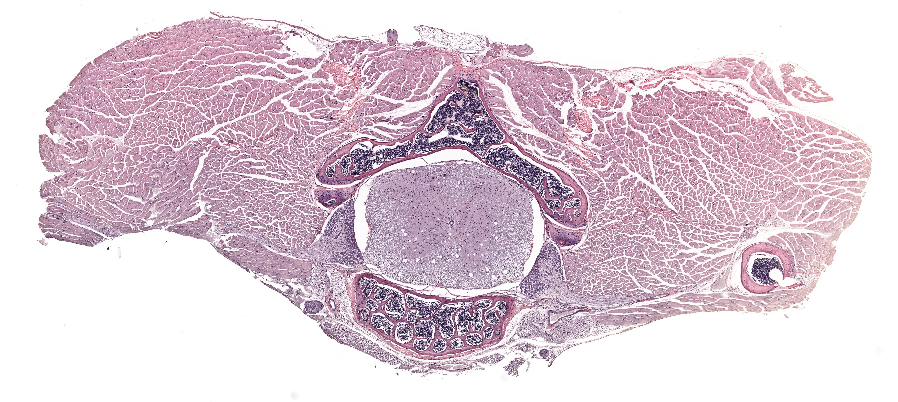
点击图片放大 · 本地概览
MH 047 Spinal Cord
脊髓与椎骨（骨松质）
Spongy Bone
H&E
本地概览
4440×1990
图像 © Histology Guide 及/或原始贡献者 · 非商业教育用途，经许可保存；原页面链接见下方
电镜照片 1 张（在线查看）
骨密质
Compact Bone
- 骨板排列紧密，主要分布于长骨骨干和骨表面。
- 骨单位由同心圆骨板围绕中央管构成，是密质骨的基本单位。
- 骨磨片可显示骨单位、间骨板与穿通管。
- 骨陷窝与骨小管在磨片中呈黑色小点与细线。
低倍镜先找同心圆排列的骨单位
高倍镜再确认中央管与骨陷窝的位置
易混提示：骨磨片经磨制处理，看不到骨细胞的真实形态。
相关标本 · 4
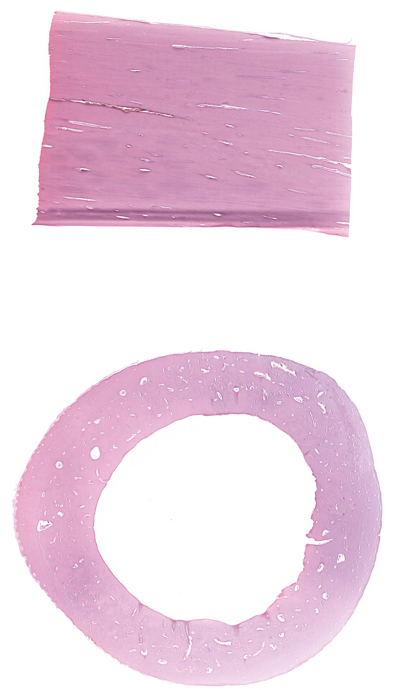
点击图片放大 · 本地概览
MH 045 Bone
骨（骨密质）
Compact Bone
H&E
本地概览
4122×7172
图像 © Histology Guide 及/或原始贡献者 · 非商业教育用途，经许可保存；原页面链接见下方
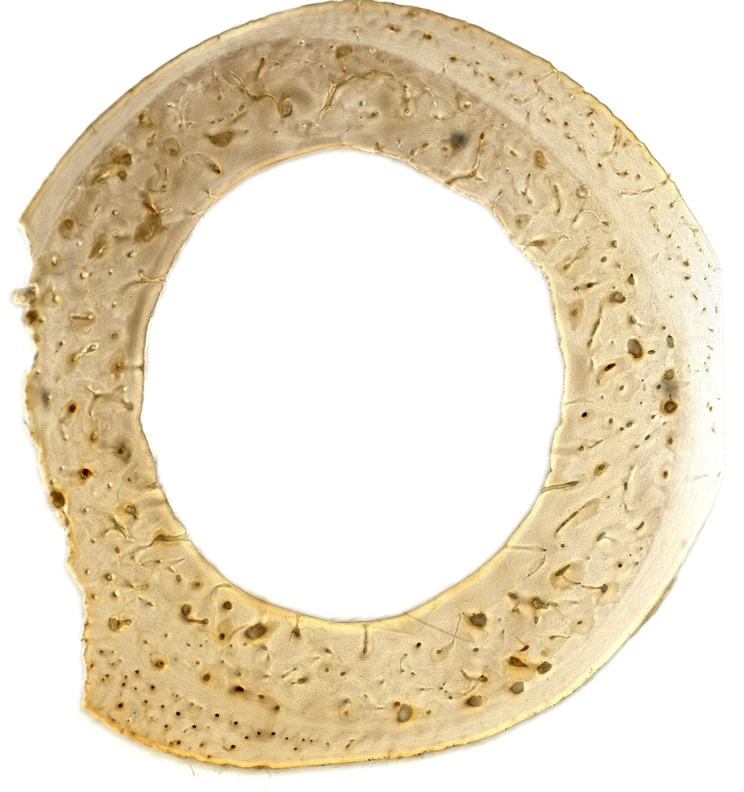
点击图片放大 · 本地概览
MH 044 Ground Bone
骨磨片
Compact Bone
本地概览
3395×3608
图像 © Histology Guide 及/或原始贡献者 · 非商业教育用途，经许可保存；原页面链接见下方
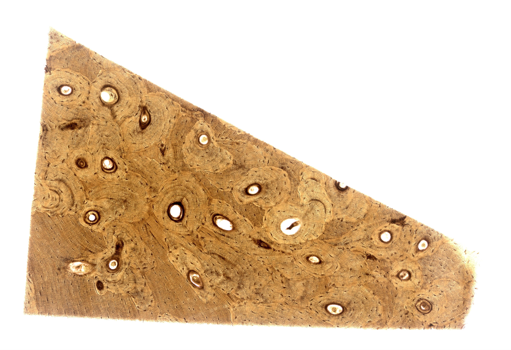
点击图片放大 · 本地概览
MHS 202 Ground Bone
骨磨片（肖尔染色）
Compact Bone
Schmorl's Stain
本地概览
5094×3492
图像 © Histology Guide 及/或原始贡献者 · 非商业教育用途，经许可保存；原页面链接见下方
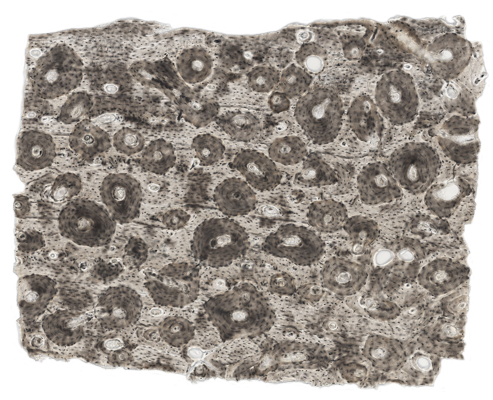
点击图片放大 · 本地概览
MHS 233 Ground Bone
骨磨片（墨汁染色）
Compact Bone
India Ink
本地概览
3205×2608
图像 © Histology Guide 及/或原始贡献者 · 非商业教育用途，经许可保存；原页面链接见下方
电镜照片 4 张（在线查看）
骨发生
BONE DEVELOPMENT
- 骨发生分膜内成骨与软骨内成骨两种方式。
- 成骨细胞分泌类骨质，钙化后成为骨基质。
- 破骨细胞体积大、含多个核，负责骨质的吸收。
- 骨发生中新骨不断形成，旧骨不断吸收改建。
低倍镜先判断切片属于膜内成骨还是软骨内成骨
高倍镜再确认成骨细胞与破骨细胞的位置
电镜照片 1 张（在线查看）
膜内成骨
Intramembranous Ossification
- 间充质细胞直接分化为成骨细胞，形成骨化中心。
- 骨小梁自骨化中心向周围生长，表面覆以骨膜。
- 扁骨和颅骨以膜内成骨方式发生。
- 成骨过程中成骨细胞成排贴附于骨小梁表面。
低倍镜先找间充质组织中出现的红染骨小梁
高倍镜再确认小梁表面成排的成骨细胞
相关标本 · 3
MH 046 Bone Development
骨发生（膜内成骨）
Intramembranous Ossification
H&E
本地概览
3060×2470
图像 © Histology Guide 及/或原始贡献者 · 非商业教育用途，经许可保存；原页面链接见下方
MH 020b Fetal Pig Snout
胎猪吻部（膜内成骨）
Intramembranous Ossification
H&E
本地概览
4365×1983
图像 © Histology Guide 及/或原始贡献者 · 非商业教育用途，经许可保存；原页面链接见下方
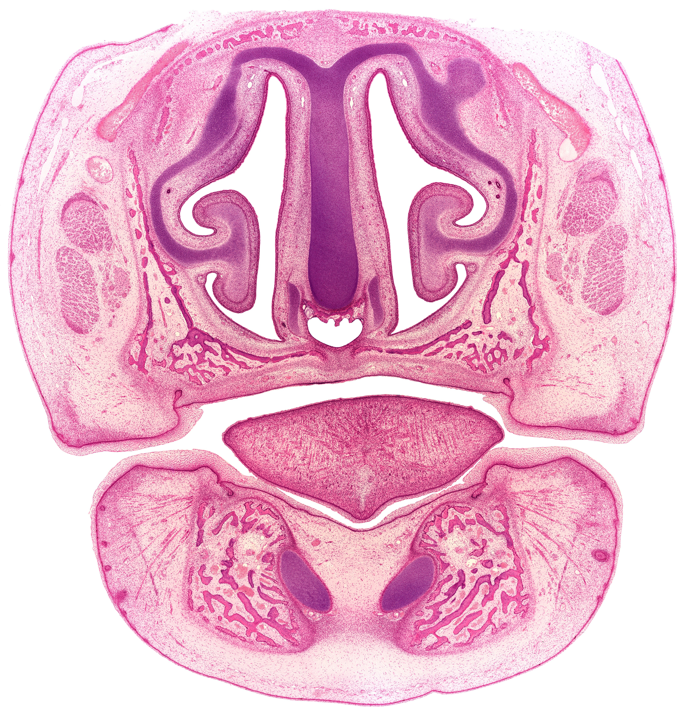
点击图片放大 · 本地概览
MHS 242 Face Embryo
胚胎面部（膜内成骨）
Intramembranous Ossification
H&E
本地概览
4237×4400
图像 © Histology Guide 及/或原始贡献者 · 非商业教育用途，经许可保存；原页面链接见下方
软骨内成骨
Endochondral Ossification
- 软骨雏形逐渐被骨组织取代，长骨由此形成。
- 骺板依次分为静止区、增殖区、肥大区、钙化区和成骨区。
- 软骨细胞肥大后基质钙化，随后被破骨细胞吸收。
- 骺板不断增殖与骨化，使骨干持续增长。
低倍镜先找骨骺端呈纵行排列的软骨细胞柱
高倍镜再确认各区软骨细胞形态的渐变顺序
易混提示：骺板各区按顺序渐变，判读时不能只看单个细胞。
相关标本 · 4
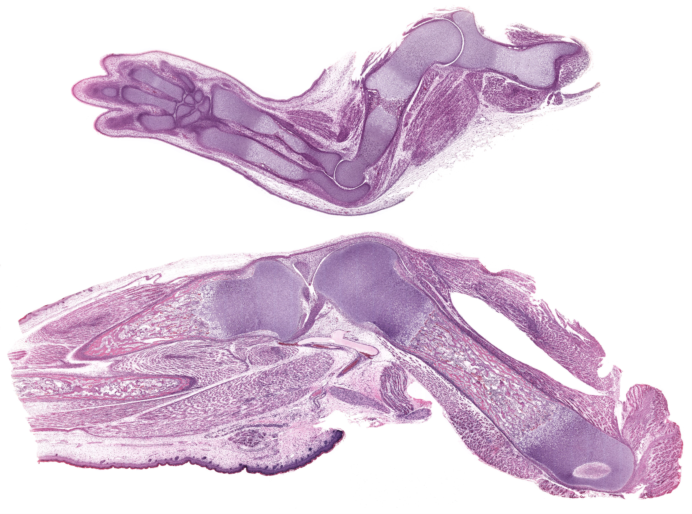
点击图片放大 · 本地概览
MHS 287 Bone Development
骨发生（胚胎软骨内成骨）
Endochondral Ossification (Embryo)
H&E
本地概览
5045×3750
图像 © Histology Guide 及/或原始贡献者 · 非商业教育用途，经许可保存；原页面链接见下方
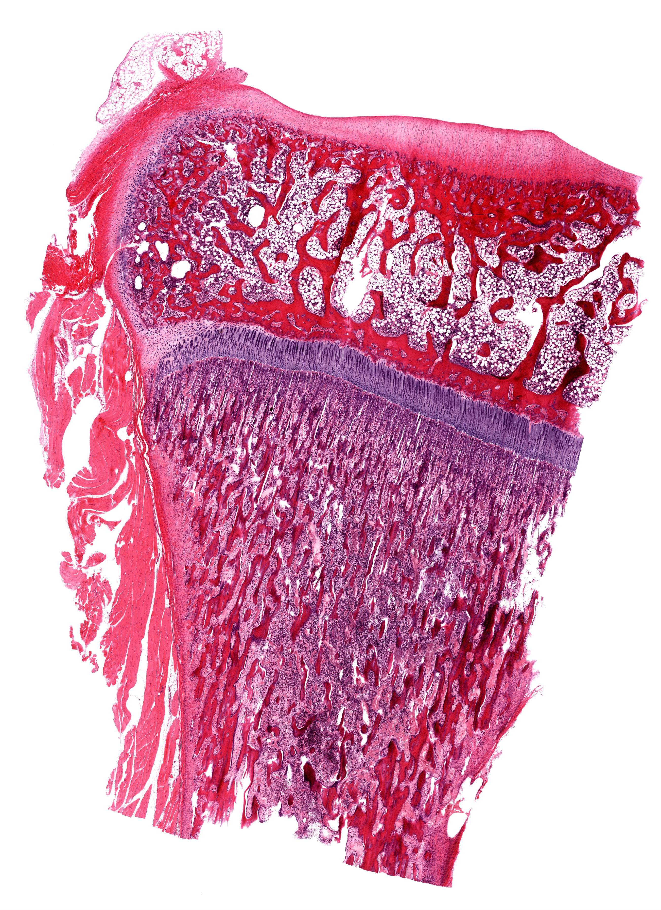
点击图片放大 · 本地概览
MH 029b Bone
骨（骺板）
Endochondral Ossification (Epiphyseal Plate)
H&E
本地概览
2606×3581
图像 © Histology Guide 及/或原始贡献者 · 非商业教育用途，经许可保存；原页面链接见下方
MH 046 Bone Development
骨发生（膜内成骨）
Endochondral Ossification (Epiphyseal Plate)
H&E
本地概览
3060×2470
图像 © Histology Guide 及/或原始贡献者 · 非商业教育用途，经许可保存；原页面链接见下方
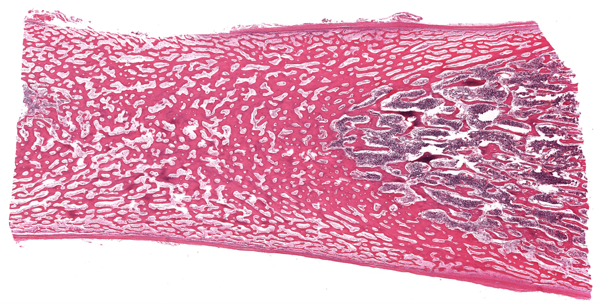
点击图片放大 · 本地概览
MHS 203 Bone
骨（软骨内成骨）
Endochondral Ossification
H&E
本地概览
3940×1996
图像 © Histology Guide 及/或原始贡献者 · 非商业教育用途，经许可保存；原页面链接见下方
牙发生
TOOTH DEVELOPMENT
- 牙的发生源于口腔上皮与下方间充质的相互作用。
- 成釉器分内釉上皮、外釉上皮和星网状层。
- 成牙本质细胞与成釉细胞分别形成牙本质和釉质。
- 牙乳头发育为牙髓，牙囊形成牙骨质与牙周膜。
低倍镜先找胚胎颌部呈钟状的成釉器
高倍镜再确认成牙本质细胞与成釉细胞的分层
相关标本 · 1
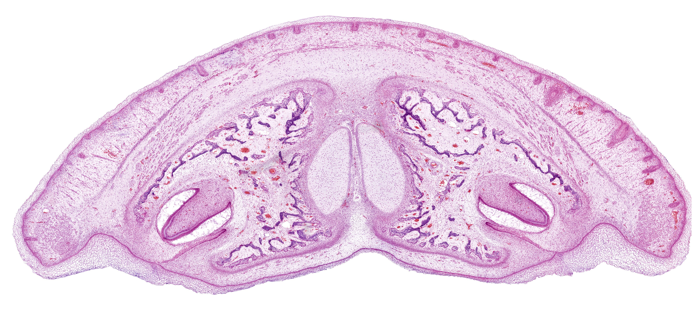
点击图片放大 · 本地概览
MH 020a Fetal Pig Snout
胎猪吻部（牙发生）
H&E
本地概览
4001×1832
图像 © Histology Guide 及/或原始贡献者 · 非商业教育用途，经许可保存；原页面链接见下方
自测
10 题 · 自编
先自己回答，再点“显示答案”。标记为易错的项目会进入复习模式。
透明软骨基质在光镜下看不到纤维的原因是什么？
概念
胶原原纤维细小且折光率与基质相近，光镜下无法分辨。
软骨细胞所在的腔隙叫什么？
概念
软骨陷窝。
骨磨片中呈黑色小点和细线的结构是什么？
识别
骨陷窝与骨小管。
骨密质的基本结构单位是什么？
概念
骨单位，即同心圆骨板围绕中央管构成的结构。
骺板从骨骺侧到骨干侧依次分为哪几区？
概念
静止区、增殖区、肥大区、钙化区和成骨区。
纤维软骨最典型的分布部位是哪里？
识别
椎间盘、耻骨联合和关节盘。
膜内成骨与软骨内成骨的主要区别是什么？
对比
膜内成骨直接在间充质中形成骨小梁，软骨内成骨先形成软骨雏形。
骨松质中的骨小梁排列方向有什么规律？
概念
与骨所受的力学方向一致。
成骨细胞与破骨细胞在骨发生中分别起什么作用？
对比
成骨细胞形成新骨，破骨细胞吸收旧骨，二者共同完成改建。
牙发生中成釉器由哪几部分构成？
概念
内釉上皮、外釉上皮和星网状层。